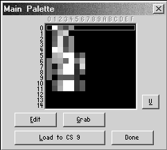
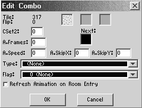
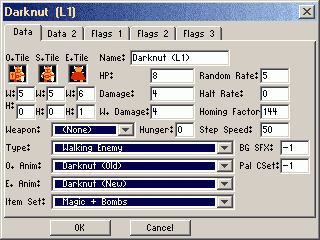
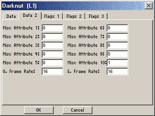
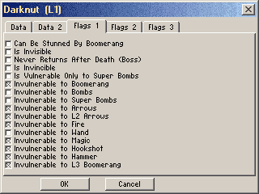
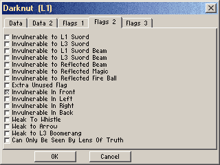

Zquest Features
Maps
A map is a 6x8 collection of screens. The limit is 255 maps to a quest, but you can have more than one Dmap per map. At any time in the game Link is both on a map and a dmap. The map/screen contains the actual combos, the dmap the palette/music and other information.
The last four screens in a map have specific uses:
0x80: Default cave or item room (where you put special items and overworld guys)
0x81: 3-stair warp cave in the overworld, passageway in dungeons
0x82: Reserved
0x83: Screen template (see template section), used mainly in dungeons
Warning: Do not use theese screens as normal screens in your game.
Any warp of type "Cave/Item room" will take you to screen 80 on the current map, and when you leave it back to the screen you came from.
Graphics: Palettes, Csets
The ZC palette is divided up into 15 blocks of 16 colors each. These blocks are called "Csets" (color sets). The first color in each Cset is transparent.
Csets 0-5 are background colors and 6-14 are sprite colors. Below is an explanation of each:
Background colors:
0,1: used for subscreen colors and map colors
2-4: loaded with different "level colors" *
5: extra bkg CSet, independent of level
Additionally Csets 6-11 can now be used as background Csets in the main editor.
Sprite colors:
6: Link's colors
7-8: constant sprite colors
9: level-defined sprite colors *
10-13: extra constant sprite color Csets
14: used for boss colors, which are loaded as needed
* Tiles using CSet 9 will change color according to the level the player is in.
Levels
00: Overworld Dmap Csets that change according to level
01-09: Palettes for Levels 1-9 Dmaps
0A: Palettes for cave Dmaps
0B: Palettes for passageways and item rooms in dungeons.
0C-FF: Extra level Dmap palettes
Note: The white numbers on the left in the level palette editor are the regular colors for the dungeon Csets.
The black numbers show what that Csets turns to when the room is dark.
The 2 shades of grey numbers are the in-between colors that Csets go through when fading from light to dark or vice versa.
Sprite Palettes - Extra Sprite Palette 1:
0: Aquamentus Cset
1: Gleeok Cset
2: Digdogger and its kids Cset
3: Ganon Cset
4: Ganon stunned Cset
5: Ganon dying Cset
6: Link with blue ring Cset
7: Link with red ring Cset
8: Link with gold ring Cset
9-12: Game Icon Csets: no ring, blue ring, red ring, gold ring.
13: Gleeok 2 Cset
14:
15: PatraBS Cset
Extra Sprite Palette 2: If you need extra sprite c-sets in making custom quests, load them here.
The Palette Edit Dialog

This dialog is under Quest-Graphics-Palettes.
You can copy an entire Cset over to a different Cset: highlight the Cset you wish to copy and press 'C', then highlight the any other Cset and press 'V'. Presto, you have copied the Cset. This can save a lot of time if you want to copy animated palettes, like the water and fire in dungeons, over to different levels.
When editing a palette, you can copy a single color to one of the other 16 colors in the palette. When editing a palette's colors, you can use the numeric keys :
1, 2, 3, to move RGB values down (respectively)
7, 8, 9 to move RGB values up (respectively)
4 to move the cursor left
6 to move it right.
This is easier than adjusting with the cross on the color spectrum and Inserting. In the level palettes there is a name field where you can name the palette for easy identification. The U in palette editor is Undo.
Combos
Combos are the building blocks of maps. Combos are a tile with extra game info, such as a type that can be water, stairs, cave, etc. , walk flags that can be set for each 8x8 corner, inherent flags, and animation. The tile can be flipped horizontally and/or vertically. What you place on your screens are combos (and not just tiles).
The combo viewer/editor is under Quest/Graphics/combos. Hot keys are:
Enter: select current combo and close
ESC: close
space: toggle horizontal and vertical views
Numpad +,-: change CSet
Ctrl + Numpad +,-: change tile of selected combos by +/- 1.
Arrows: move selection
Shift + Arrows: Select a range.
P : go to page
E: edit current combo
C: copy (select) a combo.
O: overwrite the destination combo with the source combo.
S: swap source and destination combos.
H , V (when no combos copied) : horizontally or vertically flip the tile of this combo
M : move combos (when copied). Moves the source here and deletes the source combos, removing their places in the combo table.
V (when combos copied) : paste. This will copy the source combos to the destination.
Shift - V : mass paste. Select a range and press to fill the whole range with the source combos, repeating them if necesary.
Ctrl - V : advanced paste. Brings up a dialog where you can select which properties of the combo you want to copy. note that you can only advance paste from one source combo and that mass paste applies automatically.
PgUp, PgDown: changes the combo page
Del: delete a combo, leaving an empty space in the combo page.
I : insert an empty combo before the current combo, moving all following combos one to the right.
Shift - I : delete the current combo and move all following ones one space to the left. Unlike Del this does not leave an empty space.
U : undo last action
Note: To copy and paste a whole combo page (or part of one), click on the first combo, hold shift and click on the last combo. Press C. Go to the combo page you want to copy to. Click on the first space and hit C. This method can also be used to delete a number of combos by pressing delete after selecting the combos.
The Combo Edit Dialog:

This can be brough up by pressing E in the combo pages, or right-clicking a combo in the combo page or the combo panel on the main screen.
Click on the tile (first square) to edit the tile and/or flip status.
The square next to the tile shows the places you can't walk. Click corners to toggle grey for walkable and red for unwalkable.
The second square is used if you want to use more than one Cset on the tile. Click the corners to toggle grey (regular Cset) and blue (2nd Cset).
Enter the difference between the Cset and the number of the 2nd Cset on the CSet 2 line. With this, you can also make combos that use Cset 6, 7, 8, 9, 10, or 11 by making the entire square blue.
Next: This square is used to show what combo will be next for combo cycling.
A. Frames: Number of frames for animated combo.
A. Speed: Speed of animation.
A. Skip X and Y : how many tiles the combo skips each time it advances to the next frame.
Type: See list below.
Flag: Inherent flags. A combo can have both an inherent and a normal flag, see the flags section for a list of types.
Refresh anim. : Restarts animation on the first tile whenever you enter the room.
Combo Types
- --
- Ordinary tile.
- Armos
- When touched, this combo turns into the Armos sprite.
- Auto-warp A,B,C,D
- Warps you to warp target specified automatically, as soon as it appears on screen. Link doesn't have to stand on it. (Used mainly as secret combo)
- Auto-warp [Random]
- same, but chooses one of the four targets randomly.
- Block all
- no arrows or boomerangs can pass this combo.
- Block arrow (All, Wood+Silver,Wooden)
- Arrows of the these types cannot fly over the combo.
- Block Brang (All, Wood+Magic, Wooden)
- Same for boomerangs.
- Block Fireball
- Enemy fireballs can't pass.
- Block Sword Beam
- Sword beams you shoot don't pass this combo.
- BS grave
- When touched, these release a Ghini2, just like a regular grave. However, after doing so, the combo changes to the next combo in the combo list (like with pound combos). This allows you to create graves that release one Ghini2 per visit to the screen (like in BS Zelda) or any particular number of Ghini2's (if multiple BS Grave combos are in a row in the combo list).
- Bush
- Same as slash->item, but this does the leaf animation. This is a customizable sprite (bush leaves).
- Bush->Next
- changes to the next combo on the page when slashed.
- Cave (Walk down) A-D
- Warp tile. Set tile warp A-D.
- Cave (Walk up) A-D
- Like cave, but Link seems to be walking straight in instead of down.
- Center Statue
- If the "Statues shoot fire" enemy flag is checked these tiles shoot fire from their center.
- Conveyor (Down, Left, Right, Up)
- These move Link in the indicated direction.
- Damage (1, 1/2, 16, 2, 32, 4, 8) Hearts
- If Link touches these combos he will take damage, The number after the combo shows the amount of damage in hearts. The boots protect Link from damage combos.
- Direct Warp (A,B,C,D)
- Warps Link to the screen set, without cave animation.
- Direct Warp [Random]
- Same, but chooses the target at random from the four.
- Dive warp(A,B,C,D)
- Same as swim warp, but Link must dive to activate the warp.
- Dock
- Needed at the beginning and end of a raft path. You step on or off the raft here.
- Eyeball (A/B)
- Changes its appearance based on where Link is located in relation to it. You could use them to make eyeballs that look at Link wherever he is, or townspeople that turn in his direction. The eyeball combos use 8 tiles each 1 for each direction. They are set up left to right starting with "up" and going clockwise. They also change when you move the mouse around in ZQuest.
- FF Combo Attr. Change
- ###gotta look this up
- Flowers
- Same as bush, but uses a different animation sprite (flower clippings).
- Grave
- When Link touches a grave tile, an unkillable Ghini will be produced.
- Hookshot Grab
- If Link hits this combo with the hookshot, he will be pulled over to it. Used to cross combos not otherwise crossable.
- Hookshot Only
- A combo that can only be crossed over by using the hookshot.
- Ice
- Link walks faster on ice but can't stop at once. Slippery.
- Ladder Only
- A combo that can only be crossed over by using the Ladder.
- Ladder or Hookshot
- Use either item to cross this combo.
- Left statue
- If the "Statues shoot fire" enemy flag is checked these tiles shoot fire from their left sides.
- Lock Block (Boss)
- Same as lock block but opens with boss key.
- Lock Block (Boss, Copycat)
- Same as lock block (copycat), but activated by the boss lock block on the screen.
- Lock Block (Normal)
- Acts like a door. Can only use one per screen. When you push on it a little and have a key, it will change to the next combo in the combo buffer, as will any other lock block on the screen. This allows you to create lock blocks as large as you want (you can have large, intricate doors, if you choose). This even works on layers
- Lock Block (Normal, Copycat)
- Doesn't open with a key, but when a regular lock block is opened, all lock block 2's on the screen will open (change) also.
- Magic Mirror (4-Way)
- Reflects magic back in the direction it came from.
- Magic Mirror (UL/DR and UR/DL)
- Magic beams are reflected at a 90 degree angle.
- Magic Prism (3 way, 4 Way)
- A magic beam hitting this combo splits and is sent back out 3 or 4 ways.
- Magic Sponge
- Absorbs magic beams.
- No Enemies
- Enemies cannot spawn or move onto this combo.
- No Fly Zone
- Flying enemies cannot fly over these combos.
- No Jump Zone
- Tektites can't jump on or over this.
- Overhead
- Link will seem to walk under these combos. Used for simple overhead effects without having to resort to layering. Do not use overhead combos for layering, or for any tile at the edge of a screen (for instance, dungeon doorways on a non-dungeon Dmap).
- Pound
- If hit with the hammer this combo will change to the next combo to the right on the combo page.
- Push blocks
- All these require a "push" type flag to work. For a block you can push without any further ado, just place the flag and don't set a combo type.
- Push (Heavy)
- Link must have the level-1 power bracelet to push.
- Push (Heavy, Wait)
- Same, and all enemies on screen must be dead.
- Push (Very Heavy)
- Link must have the level-2 power bracelet to push.
- Push (Very Heavy, Wait)
- Same, and all enemies on screen must be dead.
- Push (Wait)
- Link can only push this when all enemies on screen are dead.
- Reset Room
- Use as secret combo - this resets secrets in the room.
- Right Statue
- Like left statue,but fire originates on the right side of statue.
- Save Point
- Pressing Start on this combo saves the game. For games where saving is disabled by default.
- Save-Quit Point
- Pressing Start on this combo saves the game, and quits.
- Sensitive Warp (A,B,C,D)
- ###check
- Sensitive Warp [R]
- Same, but chooses target at random.
- Shallow Water
- This makes the new "ripples" sprite show and animate when Link is walking on this combo type.
- Slash
- These tiles can be removed by Link's sword. Set undercombo.
- Slash->Item
- Same as above but an item will be revealed where the tile was...1 rupee or a heart unless another item is set.
- Slash->Next
- A slash combo that changes into the next combo on the combo page when slashed.
- Slash->Next (Item)
- A slash->next where the screen's item appears when you slash it (think treasure chest).
- Slow Walk
- This combo makes Link walk slowly on it.
- Spinning tile (immediate / random)
- ###
- Stairs (A,B,C,D, Random)
- Warp tile. Set tile warp.
- Step->Next
- Turns into the next combo in the list when walked on.
- Step->Next (All)
- Turns all step->next combos into the next combo in the list when walked on.
- Step->Next (Copycat)
- Turns into the next combo in the list when you stand on a step->next.
- Step->Next (Same)
- ### check
- Swim Warp (A,B,C,D)
- If Link touches this combo while swimming and the tile warp is set, he will warp to the set location.
- Tall Grass
- Same as bush, but uses a different animation sequence and sprite "grass clippings". Also, has a tall grass sprite that shows and animates in front of Link when he walks on the tall grass combo.
- Trap (4-way)
- Move in all 4 directions to attack Link.
- Trap (Horizontal, Constant)
- Move horizontally backwars and forwards all the time.
- Trap (Horizontal, Line of Sight)
- Only move when Link is in their path.
- Trap (Vertical, Constant)
- Move vertically to attack Link, all the time.
- Trap (Vertical, Line of Sight)
- Only move when Link is in their path.
- Treasure Chest (Boss)
- Requires a boss key to open, then gives you an item if set.
- Treasure Chest (Boss, Copycat)
- Triggers when you open a boss chest.
- Treasure Chest (Locked)
- Removes one key from your inventory when opened.
- Treasure Chest (Locked, Copycat)
- Triggers when you open a locked chest.
- Treasure Chest (Normal)
- Doesn't require a key.
- Treasure Chest (Normal, Copycat)
- Triggers when you open a normal chest.
- Trigger (Permanent)
-
- Trigger (Sensitive, Permanent)
-
- Trigger (Sensitive, Temporary)
-
- Trigger (Temporary)
- Undefined
- Don't use. Use -- (first in list) instead.
- Water
- Gives the combo "water" characteristics: Link can swim in it with the flippers, it activates the ladder if "use ladder" screen flag is checked, etc. Is usually made unwalkable.
- Win Game
- replaced by the Zelda flag. Don't use.
Enemy Editor
The enemy editor is under Quest/Graphics/Sprites/Enemies.
Page 1 - Data

- Name
- Give your enemy a custom name here.
- O. Tile
- S. Tile
- E. Tile
- W. and H.
- HP
- Hit points - two HP is equivalent to one hit of the wooden sword.
- Damage
- How many quarter hearts one collision with this enemy takes away from Link.
- W. Damage
- How many quarter hearts one weapon from this enemy takes away from Link.
- Weapon
- What this enemy fires. Leave at none to not fire anything.
- Hunger
- Type
- The enemy's general behaviour.
- O. Anim
- E. Anim
- Item set
- What this enemy can drop when killed.
- Random rate
- How often this enemy changes direction.
- Halt rate
- How often this enemy stops to fire.
- Homing factor
- How much this enemy tends to follow Link.
- Step speed
- How fast this enemy walks.
- BG SFX
- Pal CSet
Page 2 - Data 2

- Misc Attribute 1
- Misc Attribute 2
- Misc Attribute 3
- Misc Attribute 4
- Misc Attribute 5
- Misc Attribute 6
- Misc Attribute 7
- Misc Attribute 8
- Misc Attribute 9
- Misc Attribute 10
- O. frame rate
- E. frame rate
Page 3 - Flags 1

- Can be stunned by Boomerang
- Vulnerability to all boomerangs.
- Is invisible
- For an always-invisible enemy, when you don't have the amulet.
- Never returns after death (Boss)
- This enemy never respawns once killed.
- Is invincible
- For bubbles and the like. HP and hits are ignored.
- Invulnerable to ...
- By default, all Link's weapons hurt an enemy. Here you can turn some off.
Page 4 - Flags 2

- Invulnerable to ...
- By default, all Link's weapons hurt an enemy. Here you can turn some off.
- Extra unused flag
- Don't touch. (Doesn't do anything yet)
- Invulnerable in ...
- For darknut-type enemies. You must hit the right side of the enemy to hurt it.
- Weak to whistle
- Gets killed instantly by whistle (like big Digodgger).
- Weak to arrow
- Gets killed instantly by arrows (Like Pol's voice).
- Weak to L3 boomerang
- The fire boomerang hurts this enemy even if boomerangs do not stun it (Peahats).
- Can only be seen by lens of truth
- For invisible enemies that even the amulet can't see.
Page 5 - Flags 3
For all spawned by ... flags, exactly one enemy should have each one turned on or else unpredictable things could happen.
- Is flashing
- This enemy flashes (like Rope 2).
- Spawned by ... enemy flag.
- If the said flag is set for the screen, this type of enemy can appear. So far, Zoras, Rocks and Traps do this.
- Spawned by ... trap combo type.
- For technical reasons, trap combos spawn a trap enemy on them.
- Spawned by Statue Fire enemy flag
- Used for the fireball statues fire.
- Spawned by Armos combo type
- Armos turn into this enemy when touched.
- Spawned by grave combo type
- Grave combos you touch spawn these (usually Ghinis).
- Spawned by Ganon room type
- A Ganon room automatically spawns one of these (Ganon).
GFX Page:
Click the tile to select a new one.
Check the Flash box if you want the item to "flash" a different Cset, then enter that Cset # under flash Cset.
2-Hand box: When checked, Link uses both hands to pick up the item. Recommended for large items such as raft and ladder.
For animated items, enter the number of animation frames and the animation speed on the proper lines. In this case the tiles for the animation should be in the order you want them to show from left to right in the tileset, and the item in the box should be the first tile in that sequence.
Initial. Delay: The delay before rerunning the animation sequence. The Number entered is a multiple (2=2x, etc.).
Link tile mod. : Changes Link's appearance when he has this item. All Link tiles are changed to the one this many tiles after the current one. A bit of maths is needed to get these set up properly.
Action Page:
These are the item's properties that control what slot this item uses on the subscreen and more.
Class Number: Each item class (swords, boomerangs, bows ...) has a class number.
Giving an item a class no. of an item slot on the subscreen makes it appear there.
Class Level: The level of this item in its class, for instance wooden sword=1, white sword=2 ...
### insert list
Counters: Some items (keys) you can have several of, these items use one of 32 counters. To make such items set:
Increase Amount: If set, picking up one of this item adds that many to the number of this counter.
Counter reference: which counter is increased, -1 = none.
DCounter: Set this for counters 1 and 4, for others leave it unchecked.
Currently implemented counters:
0 - life, 1 - rupees, 2 - bombs, 3 - arrows, 4 - magic, 5 - keys, and 6 - super bombs,
Full Max: The absolute maximum that the item can increase the maximum of the counter to. For example, a heart container will have a value of 256, which is 16 hearts (one heart is 16 HP), which means that a heart container cannot increase the heart count to above 16.
+Max: The amount to increase the maximum counter by. For a heart container, this is 16, representing one heart. Note that the increase amount for a heart container is also 16. Yes, you can increase the active counter AND the maximum counter at the same time.
Keep Item when Collected: specifies whether you keep an item in your inventory when collected. For example, a sword and a shield would have this checked. A rupee and a heart would not.
Currently implemented items
Amulet 1,2: Makes invisible enemies visible. Amulet 2 doesn't do anything yet.
Arrows (Wooden, Silver, Golden): These represent the ability to fire arrows of the said type, if you have any (and a bow). Not the actual arrows.
Arrow ammunition: The actual arrows. When you have the true arrows rule on, you need these to fire arrows, otherwise rupees.
Bait: Drop this to distract enemies, or feed hungry Goriyas that won't let you past.
Bomb (Normal): Blows things up. Effective against most enemies, and some walls too.
Bomb(Super): Blows even more things up.
Bomb ammunition: When the quest rule is checked, you need these to drop bombs.
Bomb Bag: Carries bombs.
Boomerangs: Throw these at enemies to stun them. The fire boomerang does damage too.
Boots: Allows you to walk over spikes without getting hurt.
Bow: Required to shoot arrows. The bow 2 shoots faster.
Bracelet 1,2 : allows you to push heavy objects.
Candle (blue, red): Burns things. The blue one only fires once per screen.
Cane of Byrna: not implemented yet.
Clock: Freezes all enemies.
Compass: Shows you the room the dungeon boss is in.
Din's fire: Hot stuff. Creates a ring of fire around Link.
Dust Pile: This is what Ganon turns into.
Faeries: Heal Link.
Farore's Wind: Carries Link back to the entrance of the current Dmap.
Flippers: Link can swim with these.
Hammer: Used to beat down stakes and enemies, breaks darknuts' shields.
Heart: Heals one heart.
Heart container: Your Life.
Heart container piece: 1/4 of a heart container.
Hookshot: Grab things and lets you travel across some holes, also stuns things you hit with it.
Key (Boss): Used to cross boss doors and boss locks.
Key (Level specific): A normal key that you can only use in one level.
Key (Magic): Opens all doors. The magic part is you can use it more than once.
Key (Normal): Opens locks.
Kill all enemies: What it says. Pick it up and it will trigger at once.
Ladder: To cross holes one tile wide.
Lens of Truth: Used to see secrets on the screen.
Letter: Give this to the potion shop owner and you can buy things there.
Letter (used): The letter, after it's been used.
Magic Book: With this the wand makes fires appear.
Magic container: Allows you to have more magic power.
Magic Jar: ###
Map: Shows you the rooms in a dungeon.
Misc 1,2:They don't do anything, except if you give them a script.
Nayru's Love: Puts a shield around Link, during which time he is invincible. He can, however, still get knocked around when hit.
Potion: Heals Link. the red one can be used twice.
Quiver: Allows Link to carry true arrows.
Raft: Link can ride raft paths with this and cross the waters.
Ring 1,2,3: Halves the damage Link takes from enemies.
Rupee: Basic currency unit of Hyrule.
Selection: Doesn't do anything.
Shield 1,2: Blocks or (shield 2) reflects most enemy weapons.
Swords: Link's main means of getting past enemies.
Triforce fragment: The object of the game is usually to collect these.
Triforce whole: Link holds this up when he's won the game.
Wallet: Lets you carry more rupees.
Wand: Fires magic.
Whistle: Triggers some secrets and warps Link to dungeons.